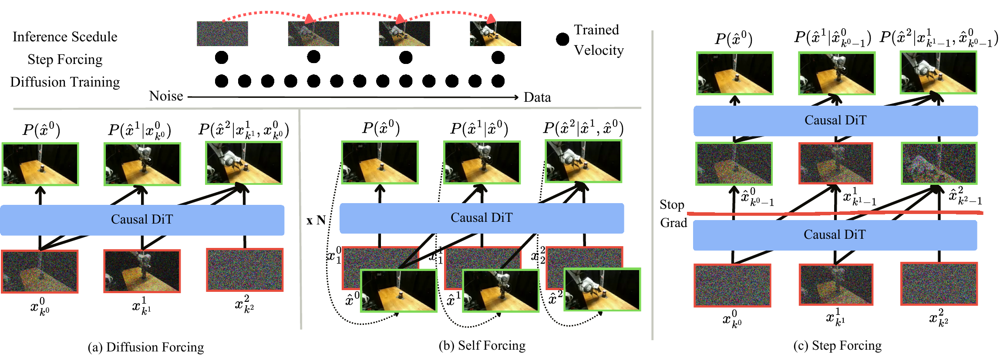
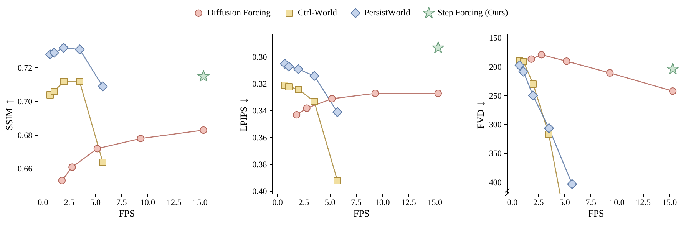
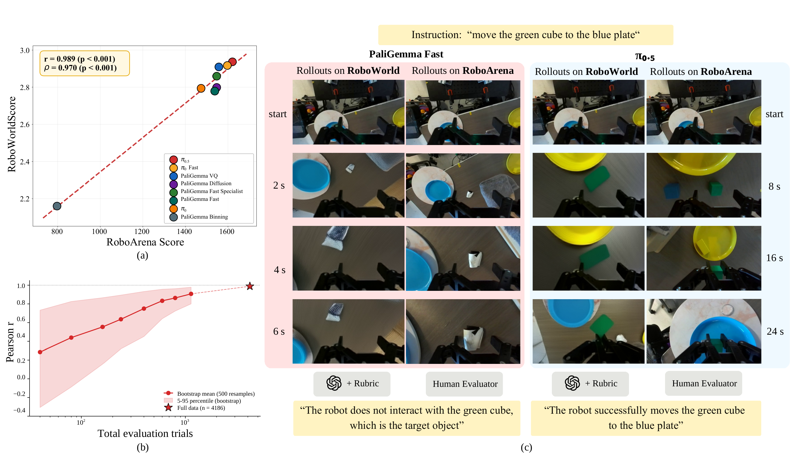
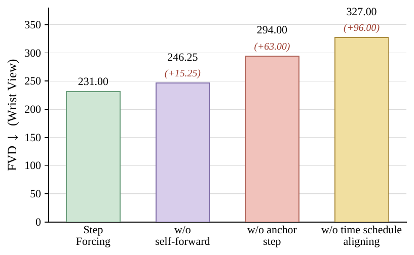
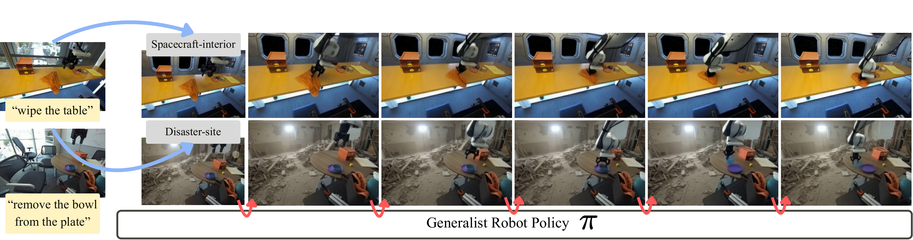

*Equal contribution
ICML 2026 F2S Workshop on Long-Horizon Video Generation
RoboWorld vs. the real world
Same task, different outcome. From one shared initial frame, each rollout plays until its result and freezes. π₀.₅ succeeds while PaliGemma Fast fails, and RoboWorld reproduces both, matching the real environment.
Abstract
Video world models are emerging as a scalable alternative for evaluating generalist robot policies, bypassing the physical constraints and engineering burden of real-world deployment. Yet evaluation with world models remains hard: model artifacts make long rollouts unreliable, and slow iterative denoising limits throughput.
We introduce RoboWorld, an automated evaluation pipeline that pairs a fast autoregressive video world model with a task-progress-aware vision-language model (VLM) judge. To make long-horizon action-conditioned rollouts both fast and reliable, we propose Step Forcing, which combines anchored and one-step self-forwarded contexts to reduce the train–test mismatch while preserving action–observation dynamics. Together, these components let RoboWorld align strongly with real-world robot evaluation across tasks and environments.
What's new
A training scheme that denoises from one-step self-forwarded priors under the same few-step schedule used at inference, while interleaving data-grounded anchor steps to keep strict action controllability.
A pretrained video diffusion model adapted with frame-causal attention, action cross-attention, and KV-caching, enabling reliable 4-step long-horizon open-loop rollouts at 15.3 FPS.
A 0–5 rubric that isolates world-model error to the wrist view while scoring real task progress from fixed external views, fairly crediting policies under imperfect rollouts, unlike binary success.
Method
Autoregressive world models suffer a train–test context mismatch: training conditions on clean or noised ground-truth contexts (Teacher / Diffusion Forcing), whereas inference conditions on the model's own generations, so errors accumulate. Training directly on self-generated contexts (Self Forcing) fixes drift but is expensive and weakens action following, because the same action is supervised from model-induced rather than data-grounded states.
Step Forcing trains the model to denoise from a one-step self-forwarded prior under a fixed discrete schedule, which aligns training with inference and enables efficient few-step (e.g., 4-step) denoising, while a probabilistic anchor step falls back to the data-grounded latent to preserve action–observation dynamics.

Diagnostic study
On BAIR Robot Pushing, Step Forcing preserves action controllability while staying visually sharp over the whole horizon, achieving the best SSIM and LPIPS on both in-horizon (ID) and extrapolation (OOD) frames.
Two additional held-out rollouts, same column order: Ground Truth · Teacher Forcing · Diffusion Forcing · Resampling Forcing · Self Forcing · Step Forcing (ours).
Efficiency
On long-horizon RoboArena trajectories (300 frames / 20 s), we sweep baseline denoising steps over {50, 32, 16, 8, 4}. Because Step Forcing shares its schedule between training and inference, it runs at its 4-step setting, reaching 15.3 FPS versus 5.7 FPS for bidirectional baselines that cannot reuse KV-cache.

Main result
We train the world model on DROID and test it well beyond its training environments by replaying RoboArena evaluation episodes inside RoboWorld, sharing only the initial frame. Across 8 open-sourced policies and 4,186 rollouts, RoboWorld's rankings match the real-world leaderboard with Pearson r = 0.989 and Spearman ρ = 0.970.

Qualitative rollouts
Each clip shows a policy executed in RoboWorld (left) and in the real RoboArena environment (right), starting from the same initial frame. RoboWorld reproduces both successful executions and policy-specific failure modes.
Ablations
On the challenging, fast-moving wrist view, removing the self-forwarded prior or the anchor step both increase FVD, and dropping schedule alignment hurts most, confirming that aligned few-step denoising plus data-grounded anchors are what keep 4-step autoregressive rollouts stable. Replacing the task-progress rubric with binary success drops Spearman correlation from 0.970 to 0.922.

Beyond the lab
RoboWorld turns a single real frame into an entire interactive environment. We transform RoboArena scenes into eight extreme settings and run full closed-loop policy evaluation inside them, with no physical access, no simulator engineering, and no asset creation.

Citation
Citation information will be available soon.